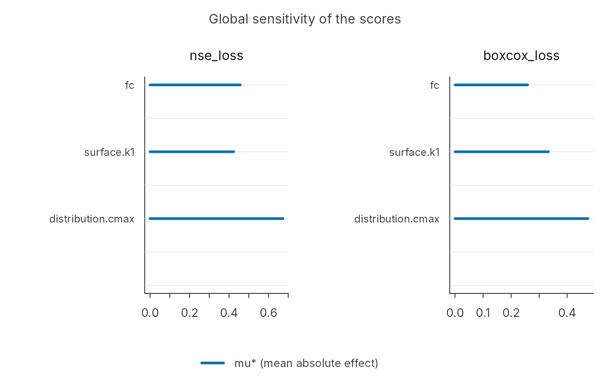

Global sensitivity of the scores to the parameters
Source:R/sensitivity_global.R
pdm_sensitivity.RdHow much each parameter matters to the fit, across the whole of its range and with every other parameter varying too: not one at a time from a single calibrated point, where a parameter can look unimportant only because of where the others happen to sit.
Usage
pdm_sensitivity(
config,
forcing,
observed,
lower,
upper,
objectives = c("nse_loss", "boxcox_loss"),
method = c("morris", "sobol"),
r = 20L,
levels = 4L,
n = 500L,
fix_below = 0.05,
warmup = 0L,
log_offset = 0.01,
log_scale = character(0),
start = c("flow", "soil"),
baseflow_fraction = 0.7,
soil_fraction = 0.5,
seed = 1L,
cores = getOption("pdmS7.cores", 1L)
)
# S3 method for class 'pdm_sensitivity'
plot(x, ...)
# S3 method for class 'pdm_sensitivity'
autoplot(object, ...)Arguments
- config, forcing, observed, lower, upper
As in
calibrate_pdm().- objectives
Losses of
pdm_objectives()to analyse, such as"nse_loss"and"boxcox_loss"; each gets its own indices from the same runs.- method
"morris"or"sobol".- r
Morris paths.
- levels
Morris grid levels; the step is
levels / (2 (levels - 1))of the range.- n
Sobol base sample size.
- fix_below
Threshold for
negligible.- warmup, log_offset, log_scale, start, baseflow_fraction, soil_fraction
As in
calibrate_pdm().- seed
Random seed; the caller's random state is restored.
- cores
Cores for the model runs.
- x, object
A
pdm_sensitivityresult.- ...
Not used.
Value
A pdm_sensitivity data frame: objective, parameter, the indices (mu_star,
sigma for Morris; first, total for Sobol) and negligible, with the number of model
runs in the runs attribute.
Details
Morris (method = "morris") screens. It walks r random paths (argument r) through the
parameter space, changing one parameter at a time by a fixed step, and records each change
in the score (an elementary effect). mu_star, the mean absolute effect, says how much a
parameter matters; sigma, their spread, says how much its effect depends on the others
(interaction or a curved response). It costs r x (parameters + 1) model runs: with 10
parameters and r of 20, 220 runs.
Sobol (method = "sobol") apportions the variance of the score. first is the share
a parameter explains alone; total the share it explains with all its interactions (Saltelli
et al., 2010, estimators: Saltelli for the first order, Jansen for the total). A parameter
with a small total index can be fixed anywhere in its range without changing the score: it
is a parameter the data cannot determine. It costs n x (parameters + 2) runs; n of 500
to 1,000 is usual, so several thousand runs, cheap on the compiled core.
negligible marks parameters to consider fixing at a regional or default value: a total
index (Sobol) or a mu_star relative to the largest (Morris) below fix_below. Fixing them
leaves the calibration to the parameters the record can pin down, which makes repeated
calibrations agree.
Each run starts as calibrate_pdm() would start it (start, baseflow_fraction,
soil_fraction). Parameters in log_scale are sampled uniformly in log(value).
Examples
rain <- synthetic_rain("2021-01-01", years = 1, dt = 1, seed = 2)
cfg <- modifyList(pdm_presets("standard"), list(area_km2 = 20))
flow <- run_pdm(pdm_from_config(cfg), rain[c("rain", "pet")])$output$q_m3s
s <- pdm_sensitivity(cfg, rain[c("time", "rain", "pet")], flow,
lower = c(distribution.cmax = 100, surface.k1 = 1, fc = 0.8),
upper = c(distribution.cmax = 400, surface.k1 = 20, fc = 1.2),
r = 6, warmup = 24 * 30)
s
#> Global sensitivity (morris), 24 model runs
#> objective parameter mu_star mu sigma negligible
#> nse_loss distribution.cmax 0.673 -0.6173 0.5016 FALSE
#> nse_loss surface.k1 0.424 0.3287 0.3300 FALSE
#> nse_loss fc 0.458 0.3664 0.4256 FALSE
#> boxcox_loss distribution.cmax 0.474 -0.4743 0.3912 FALSE
#> boxcox_loss surface.k1 0.334 0.3335 0.0619 FALSE
#> boxcox_loss fc 0.259 0.0518 0.3554 FALSE
plot(s)
